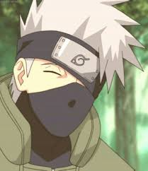
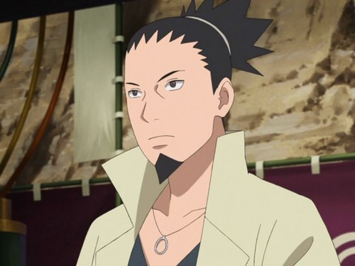

So Naruto is one of my favorite anime that I have seen(Almost beat by Dr.Stone)
It has really great character development, story, and is always a fun watch.
The battle scenes, for the most part, are thrilling and exciting
It has a lot episodes which means a lot of challanges to overcome. This includes having to fight agaisnt a lot of strong bosses such as Pain and Madara Uchiha
My favorite characters are:
Sasuke Uchiha

Itachi Uchiha

Kakashi Hatake
Shikamaru Nara
